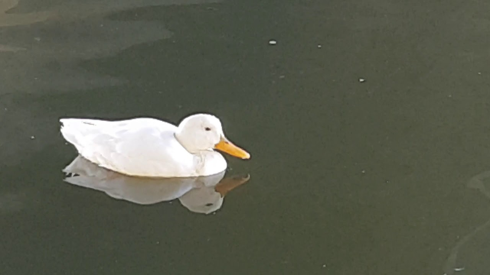

Чем питаются дикие утки?
Основой питания диких уток в природе является растительная пища. Весьма охотно утки собирают питательную ряску с поверхности водоема. Сочные водные растения можно считать их любимым кормом, доступным и обильным на дне, поверхности и берегах природных водоемов в летнее время. Если при этом им попадается улитка или личинка насекомого, утки не отказываются и от них. Процеживая воду сквозь клюв, утки с успехом ловят рыбью молодь и головастиков.
Также они способны пропускать через свой клюв ил, что позволяет им не только выбирать съедобные растительные остатки, но и отлавливать беспозвоночных (червей, личинок, насекомых). Сочная околоводная растительность входит в рацион питания диких уток. Весной в водоемах утки поедают питательную икру амфибий. А осенью они любят совершать вечерние перелеты на сжатые поля, где собирают осыпавшееся зерно.
Чем нельзя кормить уток?
Столь полезные уткам овощи, особенно твердые, ни в коем случае нельзя давать целыми. Даже отварные лучше измельчать. А сырой картофель, кабачок, тыква, морковь, свекла могут стать причиной гибели уток, приспособленных к потреблению мягкой пищи. Все продукты необходимо пропускать через мясорубку или разминать иным способом.
Сухари (высушенный хлеб) опасны не менее хлеба свежего, попав в желудок птицы, они разбухают, и их объем увеличивается примерно втрое.
Фото утки

© йцукенглшд